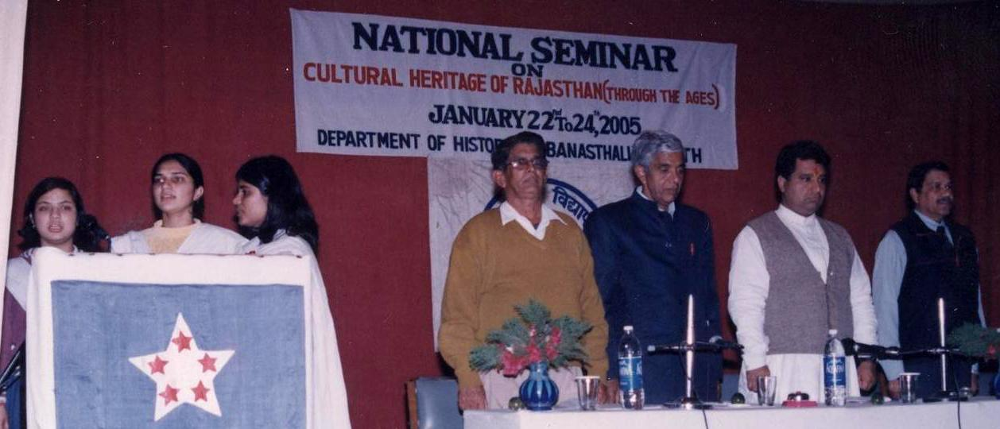
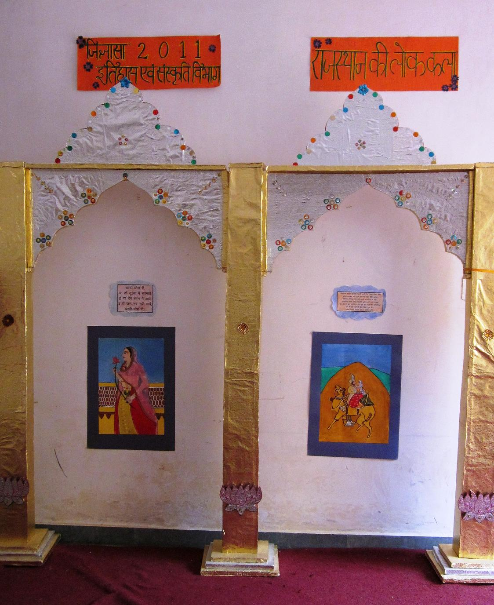
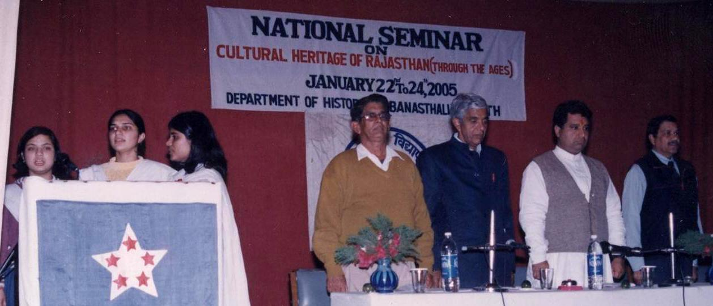
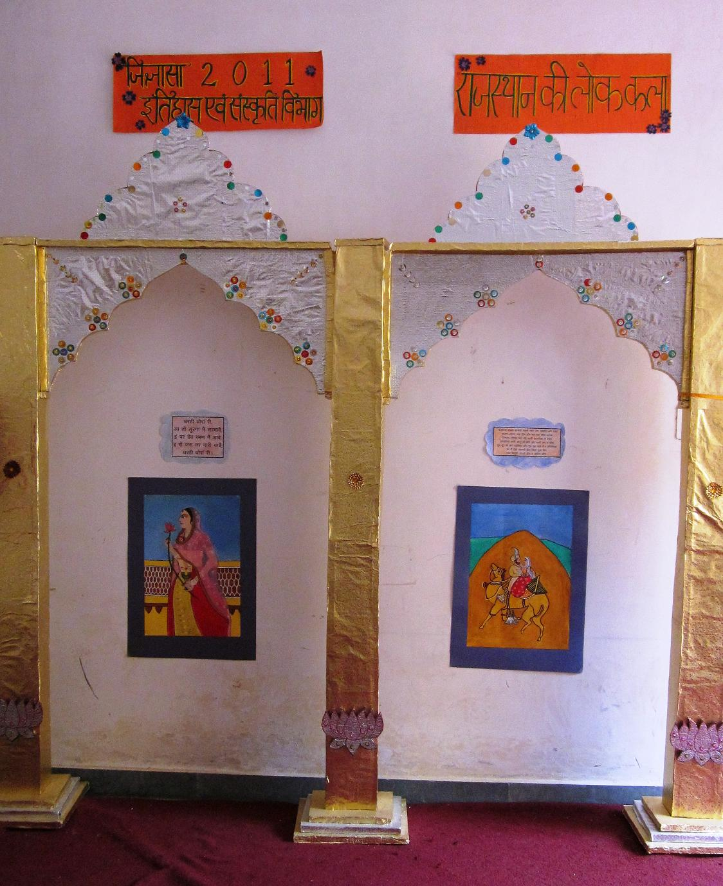
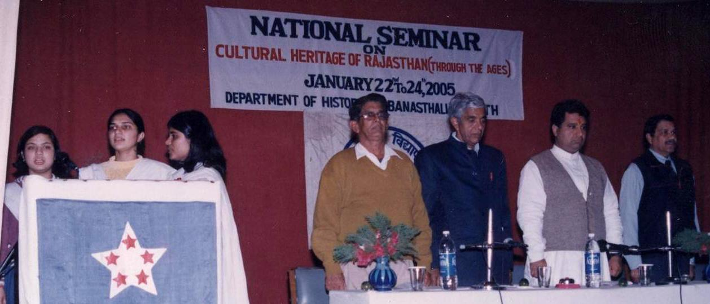
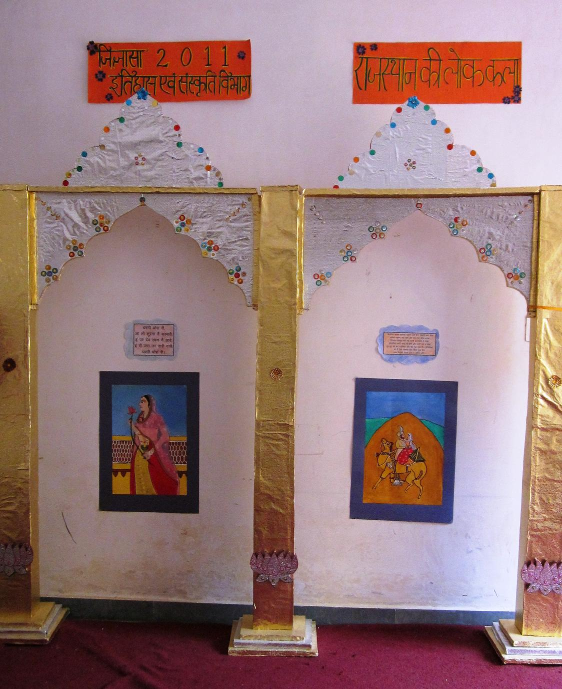

|
The Department runs B.A., M.A., M. Phil and
Ph.D. Programmes. The Course objectives are to impart knowledge and develop understanding of the economy and to provide necessary analytical tools and intellectual training. Emphasis is therefore given on Economic Theory
(Understanding), Indian Economy ( The
faculty and students work on UGC and ICSSR sponsored research projects The major thrust areas are
Development Economics, International Economics, Public Finance, and Agriculture
and Rural Development.
The Department organizes Professor P.N. Mathur
memorial Lectures every two years. Late Prof. P.N. Mathur was an eminent social
scientist
Department of Economics organizes an
annual Academic Event ‘PRAGATI’ comprising activities such as Debate,
Paper presentation, Quiz, Skit etc.
|


|
|---|